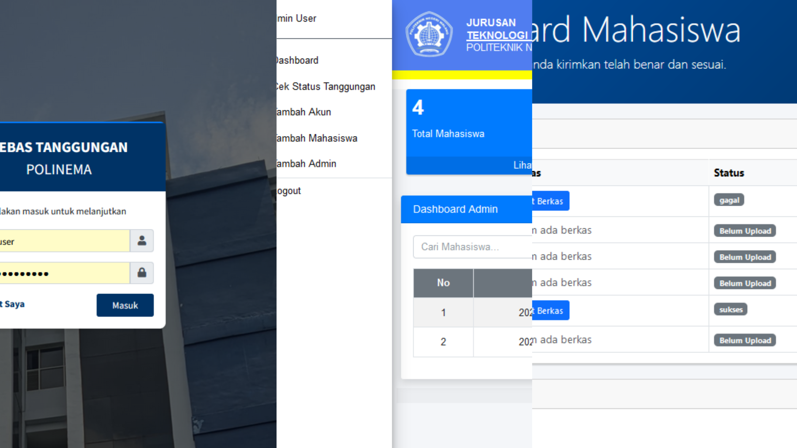
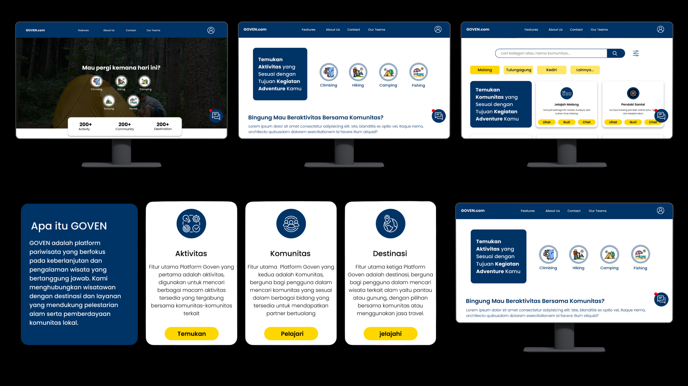
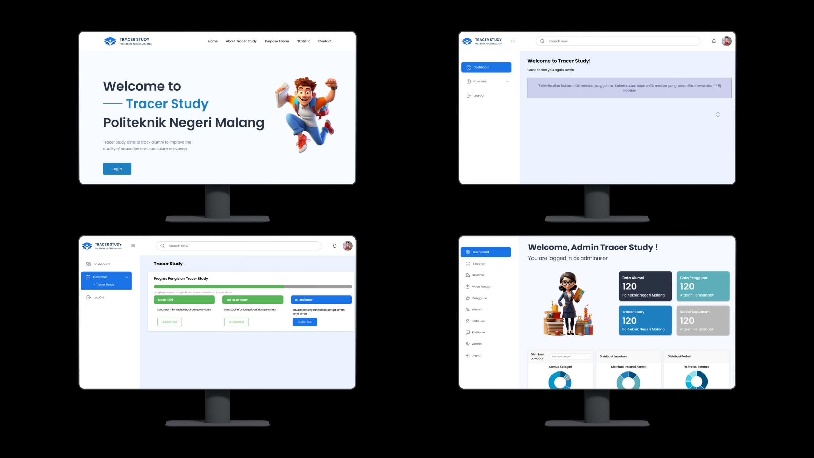
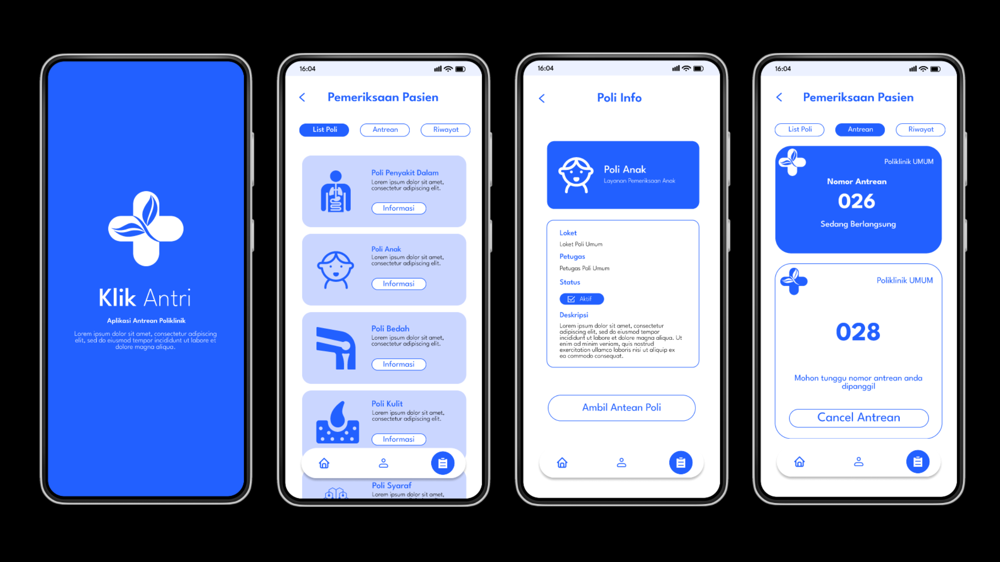
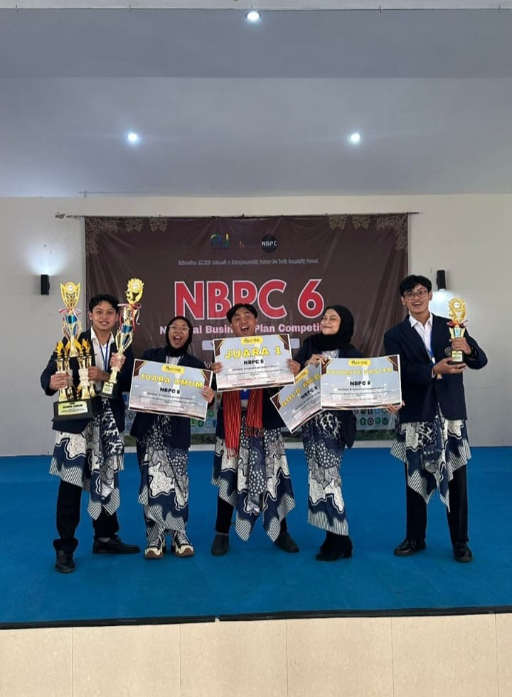
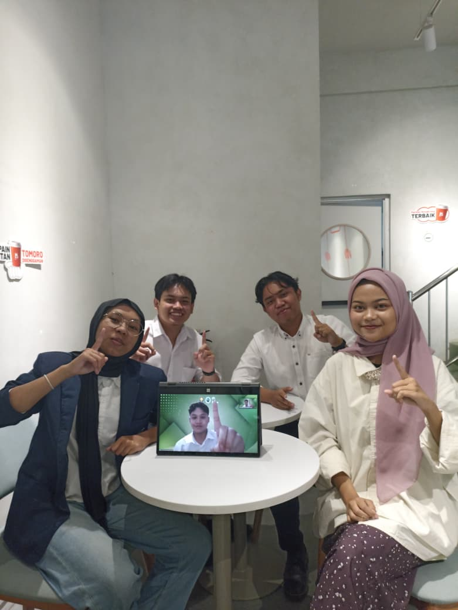
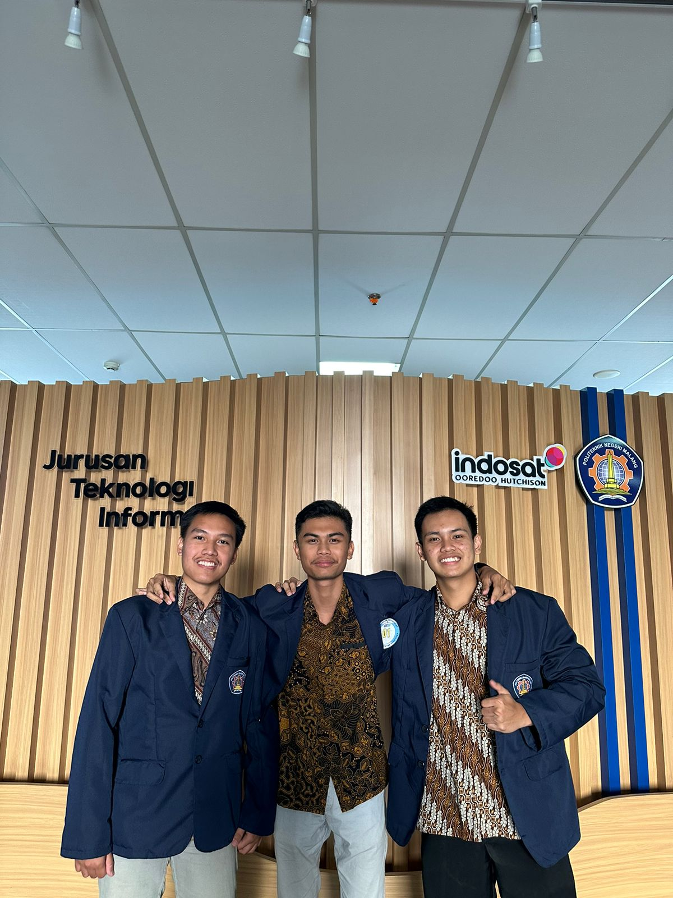

Hello World!
Hi, I'm Dimas Setyo Nugroho, an Information Technology student specializing in Business Information Systems. I’m passionate about web and mobile development and enjoy building real-world solutions through projects.
.png)
Hi, I'm Dimas Setyo Nugroho, an Information Technology student specializing in Business Information Systems. I’m passionate about web and mobile development and enjoy building real-world solutions through projects.
Mimpi itu nggak pernah mati, yg ada cuma pingsan, kemudian akan bangkit di masa tua dalam bentuk penyesalan.
Business Information Systems (Sistem Informasi Bisnis) is a study program that focuses on integrating information technology and business processes to create effective digital solutions. Through this program, I learn how to analyze business problems, design system solutions, and implement them using modern technologies. It equips me with both technical skills and business understanding to develop systems that are relevant and applicable in real-world industries.
Completed my high school education at SMAN 1 Kauman with a major in Science (IPA). During this period, I developed strong analytical thinking, problem-solving skills, and a disciplined learning approach, which became a solid foundation for pursuing studies in Information Technology.




Designed the user interface for the GOVEN platform by creating clean and user-friendly layouts that enhance user interaction. Developed interactive prototypes using Figma to simulate real application flows, allowing users to experience the system before implementation. Focused on improving usability, navigation, and overall user experience through structured design thinking.
Led the development of a web-based Tracer Study System using the Laravel framework with MVC architecture. Responsible for coordinating the team, managing task distribution, and ensuring project progress. Contributed as a full-stack developer by designing the system, modeling the database structure, and implementing both frontend and backend features. The system was developed to help track alumni career progress and provide valuable insights for the institution.
Served as Team Leader in developing an Android-based queue management application for the Polinema clinic using Flutter (Dart) and Firebase. Coordinated team activities, managed task distribution, and ensured smooth project progress. Contributed to Firebase configuration, implemented UI designs into Flutter code, and conducted system testing using Katalon Studio to ensure functionality and reliability.
Served as Team Leader in developing a web-based Final Clearance System to help final-year students complete graduation requirements efficiently. Responsible for coordinating the team and ensuring project progress. Contributed to the full development process, including database modeling, UI design, and implementing the design into functional web features.
Served as Head of Human Resource Development (PSDM) in Kelompok Studi Pasar Modal Polinema. Responsible for managing and developing human resources within a growing organization, ensuring team readiness to support organizational activities. Led and organized key programs such as bonding events (Malam Keakraban), daily operations at the Investment Gallery, and recruitment processes including open recruitment and leadership selection.
Served as Internal Coordinator in the Public Relations division of the Information Technology Department English Community. Responsible for managing internal administrative processes, including room reservations and organizational bureaucracy, ensuring all operational activities run smoothly and efficiently.

Awarded 1st Place, Gold Medal, and Best Poster at the National Business Plan Competition 6 in Yogyakarta. Developed and presented an innovative business solution, demonstrating strong analytical thinking, creativity, and presentation skills at a national level.
29 June 2025
Selected as a Finalist in the International Business Model Competition (BMC #10) organized by Politeknik Negeri Bali. Collaborated with a team to develop and present a business model on an international stage, demonstrating strong analytical thinking, innovation, and presentation skills.
July 2024
Achieved 1st Place in the PKM-PM category (Formadiksi) and Best Innovator at the internal selection of HMTI through a community-based project proposal. Designed an interactive learning system for junior high school students in Blitar, focusing on IT education using engaging methods such as drag-and-drop learning. The project aimed to improve students understanding of basic IT concepts through structured and interactive learning approaches.
2023Interested to hire me
or work with me?